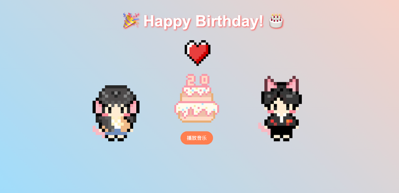

As a creative and heartfelt surprise, I designed and developed an interactive birthday website for my boyfriend using HTML, CSS, and JavaScript. This small but meaningful project became an exercise not only in front-end development but also in emotion-driven design and how digital interfaces can become containers of intimacy, affection, and celebration.

In the webpage, I’ve designed a warm layout scene:
- Two pixel-style characters stand on either side, with a birthday cake in the middle. A beating heart floats above the cake.
- When the “Play Music” button is clicked, background music (Happy Birthday song) starts playing. Meanwhile, a long birthday message appears at the bottom of the screen, displayed word by word in a typewriter effect.
- The message includes my nickname for him, memories, promises, and blessings, serving as a public written expression of affection.
- All image elements (such as the heart, characters, and cake) adopt a cute pixel style to create a relaxed and romantic atmosphere.
- The page uses gradient backgrounds, soft color schemes, and cartoon animations (like the heartbeat effect) to make the overall design more festive.
In terms of technology, here’s what I implemented:
- Used HTML to structure the webpage and CSS for visual layout and animations (like the beating heart float effect).
- Employed JavaScript to control audio playback and created the typewriter text effect via timer functions.
- Added button state-switching logic to enable “play/pause” toggling.
- The message area is initially hidden and triggered only by user clicks, enhancing the interactive ritual.
By controlling the word-by-word display with setTimeout(), I gave the message a rhythm of appearing sentence by sentence, touching heart word by word letting emotions build gradually as it unfolds slowly.
Reflection
This creation has made me realize again that web pages are not just containers for information, but also mediums for emotions. A simple button, text, or animation can trigger users’ smiles, touches, or surprises. And this ability to blend technology with emotion is exactly the form of expression I pursue as a creative computing student.
I’ve learned:
- How to build a complete experience with basic web technologies (HTML/CSS/JS);
- How to design the emotional flow for users on web pages (coordinating music, text, and images);
- How to use animations and delay effects to enhance rhythm and anticipation;
- Most importantly: Technology can be personal and soft, and even a form of love.
Although this website was created for just one person, it encapsulates my understanding of design, code, and emotional communication. I also hope to expand this project experience to more interactive creations in the future, such as allowing users to “enter blessings,” “light candles,” or “generate memories” on the webpage.